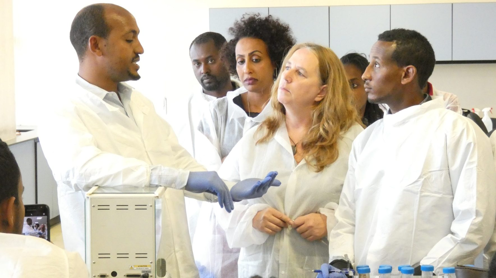

Community of Practice
Connect with healthcare providers, programme managers, researchers, and technical advisors worldwide to share practical TB solutions, discuss complex cases, and collaborate. Together we can end TB.

Community Announcements
Quarterly Peer Consultation: Implementing 6-Month BPaLM Regimens
Registration is now open for the upcoming interactive case-review session hosted by the DR-TB Thematic Group. Limited to 150 participants.
Thematic Focus Groups
Join specialized groups aligned with your clinical, programmatic, or technical domain to share focused resources and participate in targeted discussions.
DR-TB Clinical Management
Peer discussion on diagnosis, drug safety monitoring, audiometry, and complex co-morbidity treatment strategies.
Digital Adherence Technologies (DAT)
Collaborative group supporting implementers of smart pillboxes, video-observed therapy (VOT), and adherence platforms.
People-Centred Care & Stigma
Strategies for community support, mental health integration, patient rights, and reducing healthcare-related stigma.
Laboratory & Diagnostic Networks
Troubleshooting GeneXpert, Truenat, culture, and sample transportation in rural and decentralized facilities.
Childhood & Adolescent TB
Case finding, stool-based testing, contact tracing, and child-friendly formulation rollout.
National Programme Managers
Peer leadership forum for policy formulation, transition funding, procurement, and surveillance optimization.
Recent Discussions
Read trending topics, clinical case questions, and implementation insights from practitioners around the world.
Managing persistent peripheral neuropathy on BPaL regimen: clinical alternatives?
Started by Dr. A. Rahman (District Medical Officer) · 14 replies · Last reply 1 hour ago by Dr. Elena Rostova
Server integration between smart pillboxes and national TB registry (DHIS2): best practice workflows
Started by M. Mensah (M&E Specialist) · 9 replies · Last reply 3 hours ago by Grace Mensah, MPH
Experience with nutritional voucher distribution alongside community-observed therapy
Started by S. Patel (Civil Society Lead) · 21 replies · Last reply yesterday by Dr. Samuel Okafor
Decentralized GeneXpert battery backup solutions in erratic power grids
Started by T. Mwangi (Laboratory Advisor) · 8 replies · Last reply 2 days ago by Dr. Carlos Rodriguez
Upcoming Events & Working Sessions
Join live virtual workshops, case study review panels, and regional peer-to-peer dialogues.
Clinical Case Consultation: Pediatric DR-TB Management
18 November 2026 · 13:00 - 14:30 CET
Present your challenging pediatric cases to KNCV senior pediatric clinicians and peer participants.
RSVP / RegisterGlobal DAT Task Force: Country Experience Exchange
26 November 2026 · 15:00 - 16:30 CET
Quarterly exchange on overcoming implementation barriers, device procurement, and user acceptance.
Join via LMSStigma Measurement Toolkit: Practitioner Walkthrough
03 December 2026 · 14:00 - 15:15 CET
Hands-on walkthrough of the People-Centred Framework stigma assessment scorecard and reporting tools.
RSVP / RegisterMember Contributions & Field Stories
Articles, practical case reports, and lessons learned authored directly by community members.

Decentralizing DR-TB Treatment in Rural Primary Health Centers
How our district team reduced loss-to-follow-up by 35% through mobile clinical support teams and smart pillboxes.
By Dr. O. Adeleke · Published Oct 2026

Engaging Community Peer Champions to Support Stigma Reduction
Lessons learned training former TB patients as psychosocial counselors within urban community health posts.
By R. Kusuma · Published Sep 2026

Optimizing Specimen Transport with Motorcycle Couriers
Practical workflow for maintaining sample cold chain and same-day GeneXpert results reporting.
By E. Namubiru · Published Sep 2026
Shared Resources & Practical Tools
Calculators, clinic templates, translated patient leaflets, and training slides shared by community peers.
Automated DR-TB Drug Dosage and Sputum Conversion Tracking Sheet
Uploaded by District TB Coordinator · 1.2 MB · 420 downloads · Rated 4.9
Clinic Staff Training Deck: Recognizing Early Linezolid Toxicities
Uploaded by Clinical Pharmacist Lead · 4.8 MB · 310 downloads · Rated 4.8
Primary Healthcare TB Infection Control Facility Audit Checklist
Uploaded by IPC Technical Officer · 240 KB · 580 downloads · Rated 4.9
Ready to connect with global TB colleagues?
Join the KNCV Community of Practice today to join discussions, participate in monthly case reviews, and access shared tools.